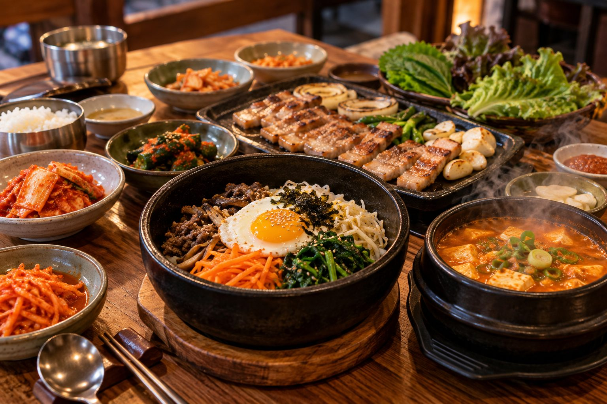

1. Get a transportation card
For most visitors, a transportation card is more convenient than buying a separate ticket every time you use the subway or bus. You can top it up and use it across public transportation.
2. Use Korean map apps alongside Google Maps
Google Maps is useful in Korea, but local map services can be better for walking routes, businesses and detailed Korean addresses. Naver Map and KakaoMap are worth having on your phone.
3. Keep a little cash
Cards and mobile payments are widely accepted, but it is still smart to keep a small amount of Korean won with you. Cash can be useful at traditional markets, small businesses and some older establishments.
4. Seoul's subway is easier than it looks
The subway may look complicated at first, but signs are generally well organized and many stations include English. Give yourself a little extra time on your first few trips, especially when transferring between lines.
5. Korean convenience stores are part of everyday life
Convenience stores are everywhere in Seoul and can be surprisingly useful. You can find drinks, snacks, simple meals, toiletries and many everyday necessities at almost any hour.

6. A few small etiquette habits go a long way
Basic courtesy matters. Speak quietly on public transportation, avoid blocking doors and queues, and follow the lead of people around you in restaurants and public spaces.

7. Don't over-plan Seoul
Seoul is a city where wandering can be part of the experience. Leave some room between major attractions so you can stop at a cafe, browse a neighborhood or simply explore a street that looks interesting.